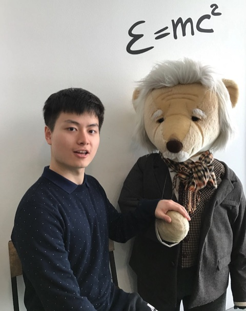

Bo Liu
Be a scientist out of interest :)
Member of Technical Staff · Recursive Superintelligence
I work on pretraining and continual learning at Recursive Superintelligence. My research interest lies in designing theoretically sound algorithms and neural architectures for agents with persistent memory and continual improvement. Before Recursive, I worked on post-training at Microsoft Superintelligence and Meta Superintelligence Lab.
I received my Ph.D. from UT Austin, where I was fortunate to be co-advised by Prof. Peter Stone and Prof. Qiang Liu. Before that, I completed my master's degree at Stanford and my undergraduate degree at Johns Hopkins.

Highlights
-
Flint
Recursive's local coding model, outperforming Qwen3.6-35B-A3B on coding and SWE tasks. Core contributor across pretraining, mid-training and post-training.
-
MAI-Code-1-Flash
Core contributor to post-training: RL and distillation recipes.
-
Llama 4 Reasoning
Core contributor to post-training: large-scale RL runs and recipes, and the initial RL infrastructure for TBD Lab.
-
Architectures
Recurrent architectures for persistent memory. Longhorn casts state-space models as amortized online learners; Maglev makes recurrent transformers with memory parallelizable to train.
-
Optimization
Async Local-SGD at DeepMind, Distributed Lion, a Lyapunov view of Lion, and Cautious Optimizers.
-
LIBERO
Lifelong robot-learning benchmark; a widely used evaluation suite for VLA models, with 2k+ GitHub stars.
-
LLM+P
The first framework to pair LLMs with classical PDDL planners for correct or optimal long-horizon plans.
Selected Publications
* equal contributionFoundation Models, Architectures & Optimization
- Maglev: Sliding Recurrent Memory
- Longhorn: State Space Models Are Amortized Online Learners
- GradLev: Token-Parallel Test-Time Training via Costate Prediction
- Cautious Optimizers: Improving Training with One Line of Code
- Improving Adaptive Moment Optimization via Preconditioner Diagonalization
- Memory-Efficient LLM Training with Online Subspace Descent
- Communication Efficient Distributed Training with Distributed Lion
- Lion Secretly Solves Constrained Optimization: As Lyapunov Predicts
- Asynchronous Local-SGD Training for Language Modeling
- Firefly Neural Architecture Descent: A General Approach for Growing Neural Networks
Continual, Multi-Task & Meta Learning
Reinforcement Learning & Decision Making
Robotics & Embodied Learning
Generative Modeling
Experience
-
Aug 2026 – PresentRecursive SuperintelligenceMember of Technical Staff
Core contributor to Flint across pretraining, mid-training and post-training; architecture and optimization research.
-
Nov 2025 – Aug 2026Microsoft · Mountain ViewMember of Technical Staff, Superintelligence (MSI)
MAI-Code-1-Flash post-training: RL and distillation recipes; research on RL and continual learning.
Manager: Weizhu Chen
-
Nov 2024 – Nov 2025Meta · Menlo ParkSenior Research Scientist, Superintelligence Labs (MSL)
Llama 4 reasoning post-training: large-scale RL runs, data cleaning and recipe design; diagnosed failures across pretraining, post-training and RL infrastructure.
Manager: Yuandong Tian
-
Jun – Oct 2023DeepMind · LondonResearch Scientist Intern
Asynchronous Local-SGD / DiLoCo for language-model training (WANT @ ICML 2024 Oral).
Mentors: Arthur Szlam, Marc'Aurelio Ranzato
-
Jun – Sep 2020Nvidia · SunnyvaleResearch Scientist Intern
Multi-agent RL for teams with changing composition (ICML 2021 Oral).
Mentors: Animashree Anandkumar, Yuke Zhu
-
Summers 2018, 2019Baidu · SunnyvaleResearch Scientist Intern
Multithreaded C++/CUDA components for an internal adaptive-base-class boosting library.
Mentor: Ping Li
-
Summers 2015, 2016Google · Los AngelesSoftware Engineering Intern
Teaching
Teaching Assistant-
Fall 2019CS 394R: Reinforcement Learning
The University of Texas at Austin
-
Winter 2019CS 234: Reinforcement Learning
Stanford University
-
Fall 2016EN.601.465/665: Natural Language Processing
Johns Hopkins University
-
Fall 2015EN.600.463: Algorithms
Johns Hopkins University